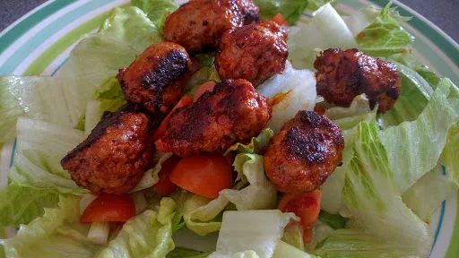

Paprika sausage salad
Gluten-free: use gluten-free sausages.
Servings: 4
Total: 20 mins
 Gluten Free
Gluten Free
Ingredients
- 8 good quality sausages
- 2 tsp paprika
- 1 tbsp olive oil
Dressing
- 3 tbsp olive oil
- 2 tbsp cider vinegar
- 1 tbsp runny honey
- salt and pepper
Salad
- 250 g cherry tomatoes, each cut into 4
- 20 black olives
- 1 tsp capers, chopped
- 2 cos lettuce, sliced
- 8 spring onions, sliced
- Parmesan cheese, shaved
Instructions
- Peel the skins off the sausages8and break each one into 4 pieces. Sprinkle thepaprika2 tsponto a place and add the salt and pepper. Roll the sausage pieces in the mixture.
- Heat the oil1 tbspin a large frying pan and add thesausages8. Fry until the pieces are browned and cooked through; it will take about 5 minutes.
- Mix together the dressing ingredients.
- Mix together the salad ingredients in a bowl. Add the dressing and mix together.
- Serve with the sausages8and Parmesan
Nosh: Quick & Easy Short Link Long Link